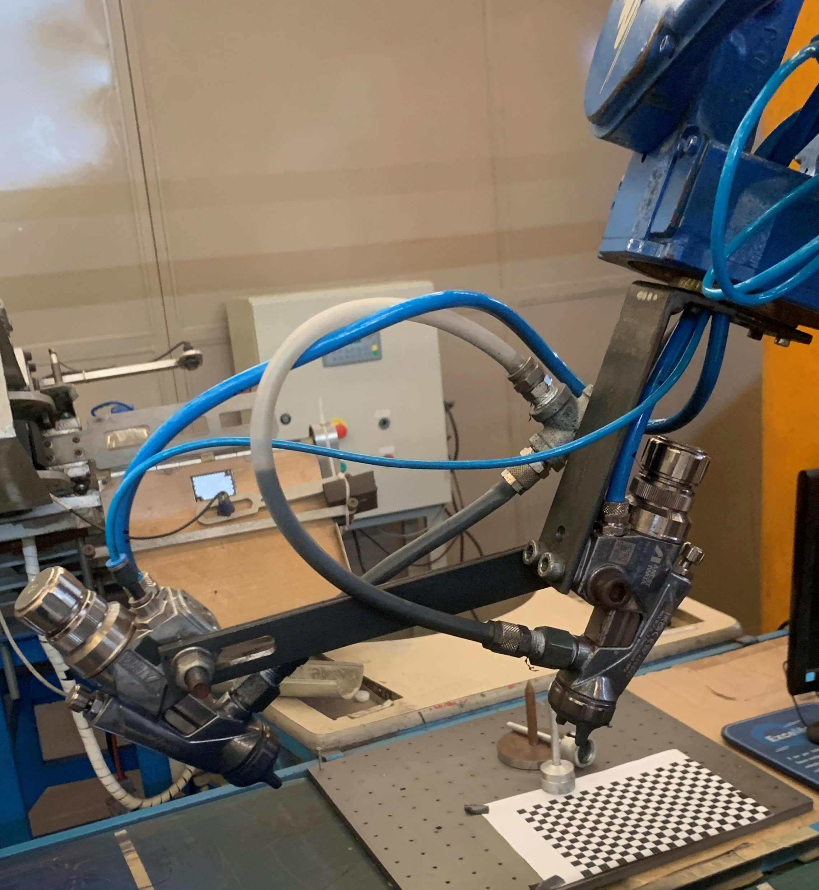

Pintura com duas pistolas
O propósito deste sistema é aprimorar o processo de pintura executado pelo robô, incorporando uma
pistola adicional para alcançar uma aplicação lateral mais precisa e eficiente, minimizando o
desperdício de material.
Este sistema apresenta melhorias significativas em termos de precisão, uniformidade, consumo e
redução de resíduos na aplicação de tinta, resultando em um aumento substancial da eficiência
operacional do robô para atividades de pintura.
Dificuldades
Suportes das Pistolas

Proximos Passos
Atualmente, o próximo passo no aprimoramento do robô de pintura equipado com duas pistolas
implica a realização de testes práticos em um ambiente real, especificamente na esteira da
fábrica sete. Essa etapa é fundamental para a calibração e ajustes do equipamento de acordo
com as condições reais de operação às quais será submetido.
Sistema de Visão
O sistema de visão integrado ao robô de pintura compreende o uso de uma câmera em conjunto com
seu software especializado, configurado para reconhecer o formato da sola e determinar a
posição e ângulo do ponto de referência estabelecido, enviando essas informações para o
software do robô.
O sistema de visão incorporado ao robô de pintura oferece uma oportunidade substancial de
economia de tinta, além de aprimorar a confiabilidade e precisão operacional dos robôs de
pintura. Esse sistema oferece benefícios ao fornecer informações minuciosas sobre a posição
precisa e a orientação das solas, superando as restrições associadas à intervenção humana.
Isso permite uma aplicação mais precisa e eficiente do revestimento, reduzindo consideravelmente
o desperdício de tinta e garantindo uma pintura mais uniforme e precisa.
Dificuldades
Seguindo o mesmo princípio abordado anteriormente na discussão sobre a programação do Robô
Yaskawa Motoman, os obstáculos encontrados, para estabelecer comunicações, configurar e
parametrizar o sistema de visão da Omron foram atribuídos à ausência de conhecimento e
specializado prévio e às dificuldades no acesso ao suporte oferecido pela empresa.
Custos Futuros
Funcionamento
O sistema de visão opera mediante a predefinição de um padrão a ser identificado pela
câmera, designadamente um para o pé direito e outro para o pé esquerdo. Após a
detecção desses padrões, são estabelecidas as coordenadas e a angulação específicas da
sola em relação a um ponto de referência predefinido. Posteriormente, essas informações
são transferidas para o robô, permitindo-lhe ajustar os movimentos de pintura conforme
as condições de posicionamento identificadas.
Andamento
O progresso do sistema de visão para assistência na operação do robô de pintura está em um
estágio avançado de desenvolvimento, com apenas alguns problemas remanescentes identificados
nos testes. O foco principal está na realização dos ajustes finais para a sua configuração
definitiva, bem como na elaboração de um método para identificar numericamente cada calçado,
visando prevenir falhas e desperdícios nos procedimentos de pintura executados pelo robô.